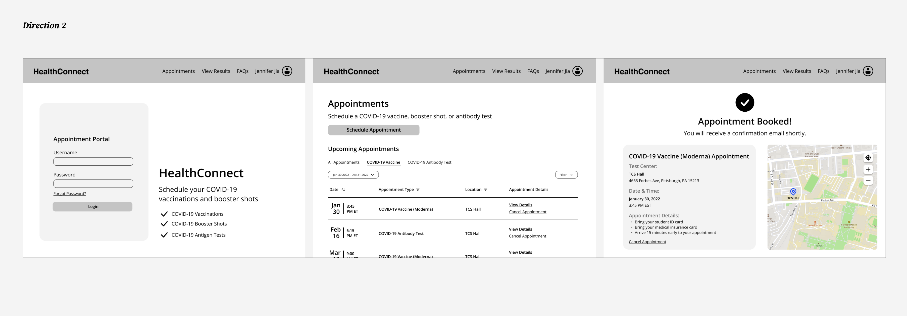

← go back home
HealthConnect COVID-19 Appointment Scheduler
Creating an interactive COVID-19 vaccine and test appointment tool
↓Overview
This website was an independent project as part of Programming Usable Interfaces at Carnegie Mellon University. HealthConnect is a university website that enables students to schedule appointments for COVID-19 testing and vaccinations. The objective of this project was to learn to conduct competitive research, prototype effectively, conduct heuristic evaluation, and code the website entirely using HTML, CSS, and Javascript.
My Role
- Use Figma to create low-fidelity and high-fidelity prototypes
- Conduct heuristic evaluation to validate assumptions and prevent mistakes
- Implement the website using HTML, JSS, and Javascript
- Use local storage, objects and arrays to make the site interactive
Problem Space
Students, faculty, and staff at Carnegie Mellon University use HealthConnect to stay up-to-date with vaccinations and boosters, to schedule appointments for COVID-19 testing, view health records, and see results from appointments. The interface can be unintuitive for the user, lacking a consistent design and requiring many steps to complete a simple task.
Research Methods
Before prototyping, I conducted a brief competitive analysis of CVS Pharmacy, Publix Super Markets Pharmacy, and Rite Aid Pharmacy. Each had its own strengths and weaknesses, allowing me to identify user pain points and areas of opportunity in my own design.

Low-Fidelity Prototypes


Final Sitemap
Project Links
Findings
I learned about how to use functions in Javascript, as well as how to call the functions in the HTML files. In my Javascript files, I coded many different functions to create a wide variety of interactivity in my website. For example, some of my functions were used to store data in local storage, alert the user following an action, clear local storage, make an input required, and more. The combination of these functions created different functionalities in my website.
I also learned about the importance of validating assumptions and testing the design with a heuristic evaluation. This type of evaluation is an inexpensive, simple way to ensure that the design prevents errors, displays important information about the system status, and other key characteristics of an intuitive website.
Coded with ♥ by Jennifer Jia